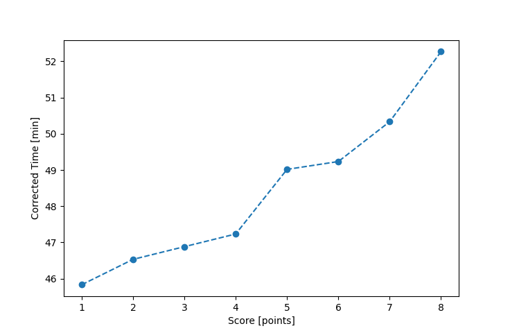

| Wind: | 2-3 (BFT) |
|---|---|
| RC: | Barry_O, Stacy_O, Sara_M |
| Date: | July 10, 2016 |
| Notes: | F1 90 |
| Rank / Score | Name | Boat | Input Time [mm:ss] | Input Offset [mm:ss] | Race Time [mm:ss] | Race Time [s] | Handicap | Corrected Time [s] | Corrected Time [mm:ss] |
|---|---|---|---|---|---|---|---|---|---|
| 1.0 | Mike_F | SF | 46:01 | 00:00 | 46:01 | 2761 | 1.00400 | 2750 | 45:50 |
| 2.0 | Ron_F | F5 | 44:57 | 00:00 | 44:57 | 2697 | 0.96600 | 2792 | 46:32 |
| 3.0 | Rod_H | LASEM | 45:37 | 00:00 | 45:37 | 2737 | 0.97300 | 2813 | 46:53 |
| 4.0 | Paul_B | BCN | 41:06 | 00:00 | 41:06 | 2466 | 0.87000 | 2834 | 47:14 |
| 5.0 | Lewis_V | BCN | 42:39 | 00:00 | 42:39 | 2559 | 0.87000 | 2941 | 49:01 |
| 6.0 | Pat_B | WF | 45:09 | 00:00 | 45:09 | 2709 | 0.91700 | 2954 | 49:14 |
| 7.0 | Nedra_F | SF | 50:32 | 00:00 | 50:32 | 3032 | 1.00400 | 3020 | 50:20 |
| 8.0 | Ralph_H | SF | 52:29 | 00:00 | 52:29 | 3149 | 1.00400 | 3136 | 52:16 |
| 9.0 | Nick_O | SF | DNF | -- | -- | -- | -- | -- | DNF |

Application Notes:
All race results are unofficial
View source code at https://github.com/cessnao3/portsmouthracecalc/